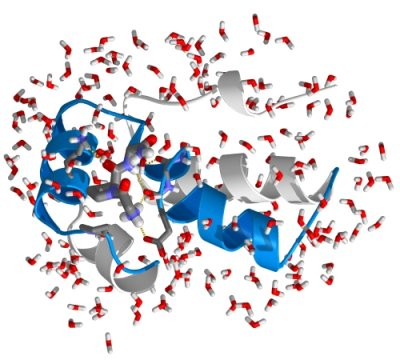

Introduction to protein simulation

In the previous part we've learned what MD simulations are and how to simulate
a van der Waals gas. Now it is time to set up a simulation of a biological
macromolecule: a small protein. Proteins are nature's universal machines. For
example, they are used as building blocks (e.g. collagen in skin, bones and
teeth), transporters (e.g. hemoglobin as oxygen transporter in the blood), as
reaction catalysts (enzymes like lysozyme that catalyse the breakdown of
sugars), and as nano-machines (like myosin that is at the basis of muscle
contraction). The protein's structure or molecular architecture is sufficient
for some of these functions (like for example in the case of collagen), but for
most others the function is intimately linked to internal dynamics. In these
cases, evolution has optimised and fine-tuned the protein to exhibit exactly
that type of dynamics that is essential for its function. Therefore, if we want
to understand protein function, we often first need to understand its
dynamics. Unfortunately, there are no experimental techniques available to
study protein dynamics at the atomic resolution at the physiologically relevant
time resolution (that can range from seconds or milliseconds down to
nanoseconds or even picoseconds). Therefore, computer simulations are
employed to numerically simulate protein dynamics.
As before, we will use the GROMACS
simulation package for this.
Today, we will simulate the dynamics of a small, typical
protein domain: the B1 domain of protein G. B1 is one of the domains
of protein G, a member of an important class of proteins, which form
IgG binding receptors on the surface of certain Staphylococcal and
Streptococcal strains. These proteins allow the pathogenic bacterium
to evade the host immune response by coating the invading bacteria
with host antibodies, thereby contributing significantly to the
pathogenicity of these bacteria (click
here for further background information on this protein).
Before a simulation can be started, an initial structure of the
protein is required. Fortunately, the structure of the B1 domain of
protein G has been solved experimentally, both by x-ray
crystallography and NMR. Experimentally solved protein structures are
collected and distributed by the Protein Data Bank (PDB). Please open
this link in a new browser
window and enter "protein G B1" in the search field. Several entries
in the PDB should match this query. We will choose the x-ray structure
with the highest resolution (entry 1PGB) for this study. To download
the structure, click on the link "1PGB", and then, under "Download Files",
select "PDB File". When prompted, select "save to disk", and save the file
to the local hard disk. To have a look at the contents of the file, on the unix prompt, type:
more 1PGB.pdb
As we've learned in the protein structure practical,
the file starts with general information about the protein, about the
structure, and about the experimental techniques used to determine the
structure, as well as literature references where the structure is described in
detail. (in "more", press the spacebar to scroll). Especially critical to check before we use a structure for a simulation
are the resolution and the R-factor (or free-R factor), that contain
information on how well the deposited structure matches the measured data
(x-ray reflection intensities). After the general information in the header,
the atomic coordinates follow, with one line per atom, containing the atom
number, the atom name, the residue name, the residue number the cartesian x,y,
and z coordinates, followed by two other numbers: the so called occupancy and
B-factor (or temperature factor). The latter two also contain important hints
about the coordinates. The occupancy is a measure for the percentage of atoms
in the crystal that occupies the specified coordinates. As you will see, in
this case the only occupancies that are not equal to one are found for water
molecules near the end of the file. These water positions are apparently not
occupied in all protein copies in he crystal. The next column contains the
so-called B-factors, which are a measure for the disorder or mobility of an
atom. Low B-factors (< 30) therefore correspond to well-defined parts of the
structure, whereas high B-factors (> 80) might indicate highly disordered parts
of the structure or even mis-interpreted parts of the model.
(quit the "more" program by pressing "q").
Now we can have a look at the structure:
rasmol 1PGB.pdb
to visualise the structure.
We now see a so-called wireframe
representation of the protein structure: atoms (with different colors
for the different chemical elements: grey for carbon; red for oxygen
and blue for nitrogen) are not shown directly, but the
bonds between atoms are shown as lines. Under "display", also try
other representations such as "sticks", "spacefill", "ball & stick"
and "cartoons". Exit rasmol under "file" -> "exit".
We will now prepare the protein structure to be simulated in gromacs.
Although we now have a starting structure for our protein, one might
have noticed that hydrogen atoms (which would appear white) are still missing from the
structure. This is because hydrogen atoms contain too few electrons to
be observed by x-ray crystallography at moderate resolutions. Also,
gromacs requires a molecular description (or topology) of the
molecules to be simulated before we can start, containing information
on e.g. which atoms are covalently bonded and other physical information. Both the generation of
hydrogen atoms and writing of the topology can be done with the
gromacs program pdb2gmx:
pdb2gmx -f 1PGB.pdb -o conf.pdb
when prompted for the force-field to be used, choose "5" (OPLS-AA/L
all-atom force field). View the result with:
rasmol conf.pdb
See the added hydrogens? The topology file written by pdb2gmx is called "topol.top". Have a
look at the contents of the file using:
more topol.top
you will see a list of all the atoms (with masses, charges), followed
by bonds (covalent bonds connecting the atoms), angles, dihedral
angles etc. Near the very end of the topology (in the "[molecules]"
section) there is a summary of the simulation system, including the
protein and 24 crystallographic water molecules.
The topology file thus contains all the physical information about all
interactions between the atoms of the protein (bonds, angles, torsion
angles, Lennard-Jones interactions and electrostatic interactions).
The next step in setting up the simulation system is to solvate the
protein in a water box, to mimick a physiological environment. For that, we first need to define a
simulation box. In this case we will generate a rectangular box with
the box-edges at least 7 Angstroms apart from the protein surface:
editconf -f conf.pdb -o box.pdb -d 0.7
(note that gromacs uses units of nanometers). View the result
with
rasmol box.pdb
and, in rasmol, type:
unitcell true
Now we fill the simulation box with SPC water using genbox:
genbox -cp box.pdb -cs spc216 -o water.pdb -p topol.top
Again, view the output (water.pdb) with rasmol. Now the simulation
system is almost ready. Before we can start the dynamics, we must
perform an energy minimisation, to alleviate any bad contacts (atoms
overlapping such that a significant repulsion would result, causing
numerical problems in the simulation) that
might be present in the system. For this we need a parameter file,
specifying which type of minimisation should be carried out, the
number of steps, etc. For your convenience a file called "em.mdp" has
already been prepared and can be downloaded from here. View the file
with "more" to see its contents. We use the gromacs preprocessor to
prepare our energy minimisation:
grompp -f em.mdp -c water.pdb -p topol.top -o em.tpr -maxwarn 2
This collects all the information from em.mdp, the coordinates from
water.pdb and the topology from topol.top, checks if the contents are
consistent and writes a unified output file: em.tpr, which will be
used to carry out the minimisation:
mdrun -v -s em.tpr -c em.pdb
The output shows that already the initial energy was rather low, so
in this case there were hardly any bad contacts. Having a look at
"em.pdb" shows that the structure hardly changed during
minimisation.
The careful user may have noticed that grompp gave a warning:
System has non-zero total charge: -4.
Before we continue with the dynamics, we should neutralise
this net charge of the simulation system. This
is to prevent artefacts that would arise as a side effect caused by
the periodic boundary conditions used in the simulation. A net charge
would result in an electrostatic repulsion between neighbouring
periodic images. Therefore, 4 sodium ions will be added to the system:
genion -s em.tpr -o ions.pdb -np 4
Type "12" to select the water group (SOL) from which 4 water molecules
will be replaced by sodium ions.
The output (ions.pdb) can be checked with rasmol. To better see the
ions, type (in rasmol):
select na
cpk
Since we now changed the topology of the system (4 water molecules
were replaced by sodium ions), we have to manually adapt the topology:
nedit topol.top
browse towards the end of the file, and change the number of SOL
(water) molecules (from 2183 to 2179). Then, add a line with "NA+ 4",
(note the space between "+" and "4") and do a "save" (twice!) followed by
"quit". Just to be on the safe side, we
repeat the energy minimisation, now with the ions included
(remember to (re)run grompp to create a new run input file whenever
changes to the topology, or coordinates have been made):
grompp -f em.mdp -c ions.pdb -p topol.top -o em.tpr -maxwarn 2
mdrun -v -s em.tpr -c em.pdb
Now we have all that is required to start the dynamics. Again, a
parameter file has been prepared for the simulation, and can be
downloaded here. Please browse
through the file "md.mdp" (using "more") to get an idea of the
simulation parameters. The gromacs online manual describes all
parameters in detail here.
Please don't worry in this stage about all individual parameters,
we've chosen common values typical for protein simulations.
Again, we use the gromacs preprocessor to prepare the simulation:
grompp -f md.mdp -c em.pdb -p topol.top -o md.tpr -maxwarn 2
and start the simulation!
mdrun -v -s md.tpr -c md.pdb -nice 0
The simulation is running now, and depending on the speed and load of
the computer, the simulation will run for a number of minutes. Until
the simulation is finished, relax, lean back or drink a coffee, before
clicking here to continue with the analysis of the simulation.